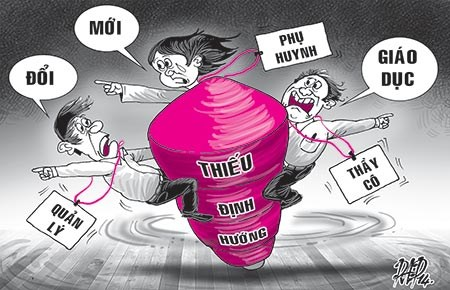

Triết lý giáo dục Việt Nam: Học để làm quan!
Theo GS Nguyễn Xuân Thu, Giám đốc Tổ chức Chất lượng Giáo dục Quốc tế (Úc), cần nhìn thẳng vào các điểm yếu nội tại đã bám sâu vào hệ thống giáo dục nước ta để có biện pháp hiệu quả nhất. Nếu không khắc phục được điều đó, giáo dục vẫn cứ như “con quay” quay quanh một vài thay đổi cục bộ kém hiệu quả...
Học để vinh thân phì gia...
.Phóng viên:Thưa giáo sư, là chuyên gia về quản lý, quản trị giáo dục, theo giáo sư đổi mới giáo dục hiện nay cần quan tâm điều gì trước?
+ GSNguyễn Xuân Thu:Tôi nghĩ rằng mọi sự thay đổi, cải cách đều cần quan tâm đến nền tảng và vận hành hệ thống trước. Đó là triết lý giáo dục. Giáo dục là nói đến học sinh, thầy cô, nhà trường, phụ huynh, cộng đồng, những nét văn hóa, cách thức dạy, học, thi cử, đánh giá, ước vọng của người học, của cha mẹ, tầm nhìn về tương lai, mục tiêu của dạy và học... Triết lý giáo dục là những tiêu chí chủ đạo, định hướng vận hành cho cả hệ thống giáo dục. Triết lý giáo dục bao trùm cả đường hướng và cả mục tiêu cuối cùng của giáo dục. Ví dụ, ở Việt Nam (VN) thầy cô giáo bắt học sinh học thuộc lòng nhưng ở các nước phương Tây mà làm vậy là bị sa thải ngay. Có nghĩa rằng giữa ta với họ có hai triết lý giáo dục khác nhau. Chúng ta cần hiểu rõ điều này để biết được cái hay mà phát huy, cái dở mà khắc phục.
. Ý giáo sư muốn nói phải biết được tiêu chí đào tạo con người là gì rồi mới xây dựng chương trình, phương pháp giáo dục, phải vậy không, thưa giáo sư?
+ Đúng vậy! Triết lý giáo dục trả lời tại sao phải đi học, đi học để làm gì, tương lai đi về đâu... Ở phương Tây, triết lý giáo dục thâm nhập vào từng con người, người ta đưa ra rất nhiều phương pháp dạy học phong phú. Học sinh luôn phải biết đặt câu hỏi, phải biết thắc mắc... Nhờ vậy mà giáo dục họ tiến rất xa. Ở VN, chúng ta còn ít nghe nói đến triết lý giáo dục. Các câu hỏi dạy và học để làm gì, dạy và học như thế nào; như thế nào để thành đạt; mục tiêu đi học để phục vụ cộng đồng ra sao... vẫn chưa phải đau đáu trong đời sống của thầy, trò và phụ huynh VN. Tư tưởng “học để làm quan” của Nho giáo vẫn ảnh hưởng rất lớn trong xã hội và giáo dục VN...
. Giáo sư có thể cho biết rõ hơn về việc triển khai triết lý giáo dục của nước ngoài?
+ Ở hầu hết các nước phương Tây, mỗi trường đại học (ĐH) ra đời đều có mục tiêu riêng, tự xây dựng các chương trình học riêng, không có trường nào giống trường nào. Vì vậy bộ giáo dục không bao giờ đụng đến chương trình học của các trường ĐH. Bộ chỉ việc xây dựng chính sách để khuyến khích các tổ chức chuyên môn lập ra các quy định về chất lượng và các tiêu chuẩn đánh giá để giúp các trường tự điều chỉnh. Như vậy là mỗi trường có một triết lý riêng, tiêu chuẩn riêng, sau khi đã thỏa thuận với tổ chức chất lượng và tiêu chuẩn thì cứ theo đó mà áp dụng. Người ta thường quan tâm tới một phần của triết lý giáo dục là triết lý dạy và học. Vì vậyở cấp học nào cũng vậy, người ta quan trọng triết lý và mục tiêu của chương trình trước rồi mới xây dựng chương trình sau. Chẳng hạn, khi xây dựng một chương trình ĐH thì phải nói rõ: Mục tiêu của chương trình để làm gì. Sau đó họ mới nghiên cứu xem dạy những môn nào để sinh viên sau khi tốt nghiệp có thể đáp ứng công việc. Còn phương pháp dạy, kiểm tra, đánh giá, tài liệu tham khảo... là thuộc quyền của thầy giáo, tất cả phải đưa vào văn bản nộp cho tổ chức kiểm định chất lượng. Đó gọi là tự do học thuật.

Chẳng biết định hướng, chỉ ôm
. Thưa giáo sư, Bộ GD&ĐT VN vừa qua đã có những điều chỉnh như chuyển hai kỳ thi tốt nghiệp THPT và tuyển sinh ĐH thành một kỳ thi quốc gia; học sinh tiểu học không đánh giá bằng điểm...
+ Tôi cho rằng đây là những bước chuyển biến cần thiết. Tuy nhiên, muốn cải tổ giáo dục VN thì phải thay đổi tư duy và phương pháp tiếp cận, cách thức làm việc của... Bộ GD&ĐT trước. Chức năng chính của Bộ GD&ĐT làxây dựng các chính sách, xây dựng chương trình hành động chứ không phải bắt tay trực tiếp thực hiện các việc đó.Thực tế Bộ GD&ĐT lâu nay “vươn tay” vào việc của địa phương, của cơ sở đào tạo quá nhiều. Chẳng hạn, Bộ bổ nhiệm hiệu trưởng ĐH; làm khung chương trình ĐH nhưng rất tiếc đa phần làm chưa tốt; tổ chức tuyển sinh và tư vấn nghề nghiệp; thanh tra, kiểm tra đủ loại hoặc in cả phôi bằng... Thẳng thắn với nhau, nếu cứ duy trì vai trò quản lý như vậy thì Bộ GD&ĐT khó có thể đạt được mục tiêu cải tổ giáo dục, bất cứ một vị bộ trưởng giáo dục nào cũng sẽ phải thất bại đắng cay. Tôi cho rằng khủng hoảng trong giáo dục chủ yếu xuất phát từ chính sách yếu; các văn bản luật không định lượng được, thiếu minh bạch, còn bảo vệ lợi ích cục bộ, không nghiêm trong thi hành, chưa nghiên cứu kỹ lưỡng để phù hợp tình hình trong nước và quốc tế...
. Nghĩa là chúng ta cần “cải tổ giáo dục” thay cho cụm từ “cải cách” hoặc “đổi mới”?
+ Đúng! Chúng ta phải bàn đến việc cải tổ hệ thống giáo dục thay vì bàn đến việc cải cách, đổi mới thuộc phần ngọn, mang tính bộ phận, cục bộ. Lãnh đạo ngành giáo dục phải tính đến chiến lược, chính sách giáo dục, về cách làm và việc phân bố hợp lý ngân sách cho những công việc đó. Còn việc làm cụ thể nên để cho địa phương, cho cơ sở giáo dục và cho các tổ chức, nghiệp đoàn đảm nhiệm. Nhìn chung, làm chính sách bao giờ cũng gắn với chương trình và có ngân sách đi kèm...
Loại bỏ rào cản để vươn tầm quốc tế
. Ngoài những yếu tố cần thay đổi tư duy, cách làm thì còn yếu tố nào ảnh hưởng tới giáo dục, thưa giáo sư?
+ Theo tôi còn nhiều lắm!
-Thứ nhất:Rào cản văn hóa.Do điều kiện lịch sử, VN một mặt hưởng một di sản phong phú về tri thức, văn hóa từ nhiều nguồn nhưng cũng bị ảnh hưởng không nhỏ từ việc này. Chẳng hạn, có những người tốt nghiệp trong khối Liên Xô và Đông Âu cũ; có những người chịu ảnh hưởng của Hán học; lại có những người chịu ảnh hưởng của giáo dục Pháp, Mỹ và một số nước khác... Sự khác biệt trong tư duy, kinh nghiệm dễ dẫn đến hình thức phản kháng một chiều, cực đoan, làm ảnh hưởng đến hiệu quả giáo dục. Vậy ngoài các luật, nghị định, quyết định, thông tư,VN cần sớm hình thành cho được một triết lý giáo dục dung hòa tất cả tư duy giáo dục khác biệt mới tạo nên sức mạnh tổng hợp, làm nền móng cho ngôi nhà giáo dục VN phát triển.
- Thứ hai:Tâm lý vọng ngoại.Nhiều người VN luôn nghĩ cái gì của nước ngoài cũng tốt, giáo dục cũng không ngoại lệ, làm cho các nhà giáo dục trong nước dần mất niềm tin vào chính mình. Vì thiếu thông tin, nhiều người xem giáo dục của VN là kém chất lượng. Điều này không hoàn toàn đúng! Là người có chút ít hiểu biết và kinh nghiệm về giáo dục quốc tế, nhất là ĐH, tôi công bằng thưa rằng giáo dục của VN có mặt yếu kém nhưng cũng có nhiều mặt phụ trội hơn không ít trường ĐH trên thế giới. Tôi có hàng trăm chứng cứ đối chiếu khoa học để hỗ trợ quan điểm này của mình. Chỉ cần có những thay đổi hợp lý, người Việt sẽ vươn tầm về giáo dục ngay từ trong nước...
- Thứ ba:Do chúng tachưa thực sự có tự trị ĐH, mà từ chính thức thường gọi là tự chủ ĐH.Đây không phải mới mẻ trong các xã hội phương Tây. Cần phân định rõ tự trị ĐH với tính tự tung tự tác. Có nhiều loại tự trị: 1.Tự trị về mặt tổ chức, quản lý là cần thiết. Các chức vụ trong các trường ĐH phải để cho hội đồng trường quyết định; 2.Tự trị về học thuậthay hàn lâm là tối cần thiết. Bộ GD&ĐT cần làm rõ những lĩnh vực học thuật nào được tự trị và những lĩnh vực nào cấm kỵ. (Các nước phương Tây tuyệt đối cấm tuyên truyền chính trị và tôn giáo trong trường học); 3.Tự trị về ngân sách. Trách nhiệm của Bộ GD&ĐT là lập và phân bố ngân sách hợp lý... Nhà nước cần hỗ trợ học phí, chi phí nghiên cứu đồng đều cho sinh viên dù họ học loại trường công lập hay tư thục; nhà nước cần đưa ra quy định, các điều kiện tham gia dự án công bằng cho các loại trường;không nên sử dụng hai cụm từ “vì lợi nhuận” và “phi lợi nhuận”vì dễ gây hiểu lầm, có thể sử dụng hai cụm từ khác “chia lợi nhuận” và “không chia lợi nhuận”...
- Thứ tư:Phải có sự tham gia của các tổ chức chuyên môn và kiểm định độc lập.Từ trước đến nay Bộ GD&ĐT bao thầu hết, không để cho các tổ chức chuyên môn trong xã hội tham gia và đây chính là sự lãng phí to lớn về vật lực, tài lực. Chúng ta cần trí tuệ của gần 100 triệu dân chứ không phải chỉ dựa trên một số ít cá nhân có quyền lực...
- Thứ năm:Về tổ chức nghiên cứu khoa học. Cần thành lập hội đồng nghiên cứu khoa học VN với sự tham gia của đại diện các bộ ngành, các trường ĐH, viện nghiên cứu. Hội đồng này có nhiệm vụ lập các chính sách phát triển nghiên cứu quốc gia, phân bổ đề tài nghiên cứu minh bạch để phát triển đất nước. Sức mạnh của một nước nằm một phần rất lớn trong nghiên cứu khoa học, phát triển công nghệ. Thiếu nó VN sẽ không có một nền công nghiệp cao và các trường ĐH khó vươn tới mức ngang tầm với các trường ĐH thuộc các nước trong vùng.